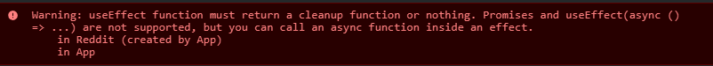

React Hook Warnings for async function in useEffect: useEffect function must return a cleanup function or nothing
I was trying the useEffect example something like below:
useEffect(async () => { try { const response = await fetch(`https://www.reddit.com/r/${subreddit}.json`); const json = await response.json(); setPosts(json.data.children.map(it => it.data)); } catch (e) { console.error(e); } }, []);
and I get this warning in my console. But the cleanup is optional for async calls I think. I am not sure why I get this warning. Linking sandbox for examples. https://codesandbox.io/s/24rj871r0p 
Answer
For React version <=17
I suggest to look at Dan Abramov (one of the React core maintainers) answer here:
I think you're making it more complicated than it needs to be.
function Example() { const [data, dataSet] = useState<any>(null) useEffect(() => { async function fetchMyAPI() { let response = await fetch('api/data') response = await response.json() dataSet(response) } fetchMyAPI() }, []) return <div>{JSON.stringify(data)}</div> }
Longer term we'll discourage this pattern because it encourages race conditions. Such as — anything could happen between your call starts and ends, and you could have gotten new props. Instead, we'll recommend Suspense for data fetching which will look more like
const response = MyAPIResource.read();
and no effects. But in the meantime you can move the async stuff to a separate function and call it.
You can read more about experimental suspense here.
If you want to use functions outside with eslint.
function OutsideUsageExample({ userId }) { const [data, dataSet] = useState<any>(null) const fetchMyAPI = useCallback(async () => { let response = await fetch('api/data/' + userId) response = await response.json() dataSet(response) }, [userId]) // if userId changes, useEffect will run again useEffect(() => { fetchMyAPI() }, [fetchMyAPI]) return ( <div> <div>data: {JSON.stringify(data)}</div> <div> <button onClick={fetchMyAPI}>manual fetch</button> </div> </div> ) }
For React version >=18
Starting with React 18 you can also use Suspense , but it's not yet recommended if you are not using frameworks that correctly implement it:
In React 18, you can start using Suspense for data fetching in opinionated frameworks like Relay, Next.js, Hydrogen, or Remix. Ad hoc data fetching with Suspense is technically possible, but still not recommended as a general strategy.
If not part of the framework, you can try some libs that implement it like swr.
Oversimplified example of how suspense works. You need to throw a promise for
Suspense to catch it, show fallback component first and render Main
component when promise it's resolved.
let fullfilled = false; let promise; const fetchData = () => { if (!fullfilled) { if (!promise) { promise = new Promise(async (resolve) => { const res = await fetch('api/data') const data = await res.json() fullfilled = true resolve(data) }); } throw promise } }; const Main = () => { fetchData(); return <div>Loaded</div>; }; const App = () => ( <Suspense fallback={"Loading..."}> <Main /> </Suspense> );
Suggest
When you use an async function like
async () => { try { const response = await fetch(`https://www.reddit.com/r/${subreddit}.json`); const json = await response.json(); setPosts(json.data.children.map(it => it.data)); } catch (e) { console.error(e); } }
it returns a promise and useEffect doesn't expect the callback function to
return Promise, rather it expects that nothing is returned or a function is
returned.
As a workaround for the warning you can use a self invoking async function.
useEffect(() => { (async function() { try { const response = await fetch( `https://www.reddit.com/r/${subreddit}.json` ); const json = await response.json(); setPosts(json.data.children.map(it => it.data)); } catch (e) { console.error(e); } })(); }, []);
or to make it more cleaner you could define a function and then call it
useEffect(() => { async function fetchData() { try { const response = await fetch( `https://www.reddit.com/r/${subreddit}.json` ); const json = await response.json(); setPosts(json.data.children.map(it => it.data)); } catch (e) { console.error(e); } }; fetchData(); }, []);
the second solution will make it easier to read and will help you write code to cancel previous requests if a new one is fired or save the latest request response in state
Working codesandbox